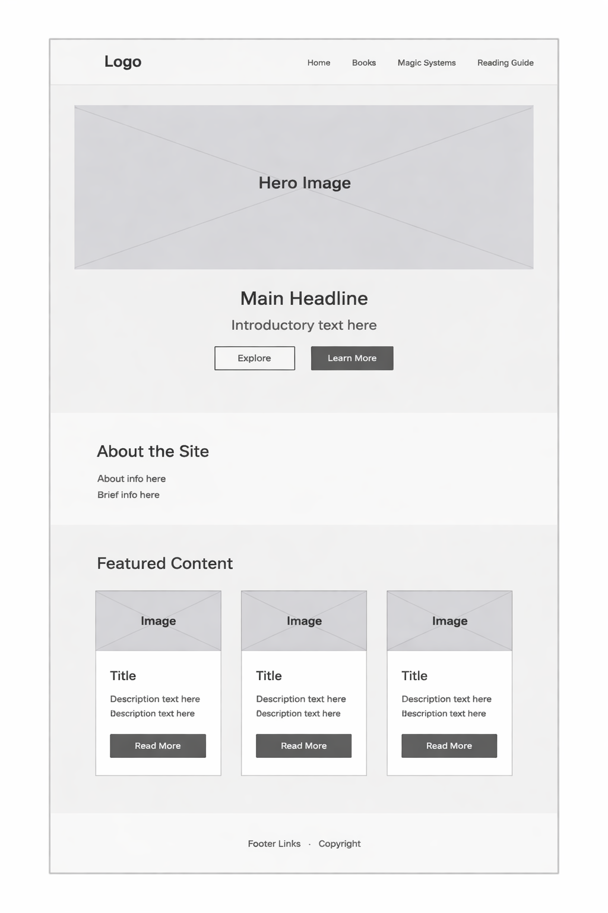
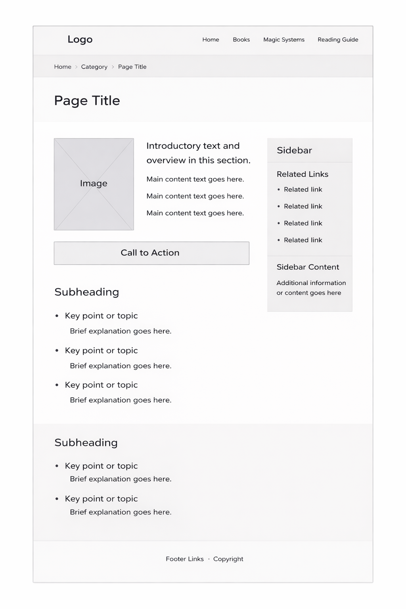

Site Name
Cosmere Companion
This name was chosen because the site is designed to be a helpful companion for readers exploring Brandon Sanderson’s Cosmere universe. It is short, clear, and directly connected to the fantasy book content the site will focus on.
Suggested folder name: cosmere-companion
Purpose
Cosmere Companion is a fan-focused website created to help readers learn about the books, worlds, and magic systems found in Brandon Sanderson’s Cosmere. The site will organize important information in a simple and visually appealing way so that both new readers and longtime fans can explore the universe more easily.
Audience
The intended audience is fantasy readers, especially people who are interested in Brandon Sanderson’s books. This includes beginners who want help choosing where to start, as well as existing fans who want a clean reference page for comparing worlds, books, and magic systems.
Dynamic Elements
JavaScript will be used to make the site interactive and organized. The main content will be stored in arrays of objects that include data about books, worlds, and magic systems. JavaScript will generate cards on the page, filter content by category, and respond to user actions like button clicks, navigation choices, or search input.
The site will use DOM interaction to select elements, update displayed content, and react to events.
It will include multiple functions, conditional logic, arrays, objects, ES Modules, and array methods
such as forEach(), filter(), and map(). I plan to separate my
JavaScript into modules, such as one module for data and another for rendering or filtering content,
so the code is easier to organize and maintain.
Logo
The logo features the site name, Cosmere Companion, with a fantasy-inspired visual style. It uses a magical book-and-star theme to match the atmosphere of the Cosmere while still being readable and polished.
Color Schema
The primary text color will be a dark gray (#1f1f1f) to maintain strong readability against light backgrounds while avoiding the harshness of pure black. Accent gold (#D4A017) will be used sparingly to highlight important elements and calls to action.
#1B263B
Primary background / headings#415A77
Buttons / accents#E0E1DD
Page background / contrast areas#C7D3DD
Borders / secondary backgrounds#D4A017
Highlight accentTypography
Heading Font: Cinzel, serif
Cinzel gives the site a dramatic and fantasy-inspired look that works well for book and world-building content.
Body Font: Open Sans, sans-serif
Open Sans is easy to read on both desktop and mobile screens, making it a good choice for paragraphs, labels, navigation, buttons, and general content.
Content
Home Page Content
Welcome to Cosmere Companion, a guide for readers exploring Brandon Sanderson’s connected fantasy universe. Whether you are just starting with Mistborn or diving deep into The Stormlight Archive, this site will help you learn about the books, worlds, and magic systems of the Cosmere.
The home page will introduce the site, highlight featured books or series, and provide quick ways to explore important topics. It will include a hero section, an overview of the site, and featured content cards to help users navigate.
Child Page Content
The child pages will focus on specific content areas such as books, magic systems, or reading guides. For example, a Books page will include series cards for Mistborn, The Stormlight Archive, Elantris, Warbreaker, and Tress of the Emerald Sea. Each card will include a title, short description, world, and reading relevance.
A Magic Systems page will explain systems such as Allomancy, Feruchemy, Hemalurgy, Surgebinding, Awakening, and AonDor. A Reading Guide page will suggest where new readers should start based on interests such as action, mystery, worldbuilding, or character-driven stories.
Images, Icons, and Graphics
The site will include a logo, a hero image or banner, and fantasy-themed visuals related to books, reading, stars, and magical symbols. These images will support the content and strengthen the visual identity of the site.
Planned Data
The site will use JavaScript data structures to store information about books, worlds, and magic systems. Each object may include properties such as title, category, description, series, and featured status. This data will be used to build content cards dynamically on the page.
Planned Pages
- Home: Introduction to the site and featured content
- Books: A collection of Cosmere books and series cards
- Magic Systems: Summaries of powers and how they work
- Reading Guide: Suggested starting points for different types of readers
Wireframes
Home Page Wireframe
This wireframe shows the layout for the home page, including a header, navigation, hero section, featured content, and footer.

Child Page Wireframe
This wireframe shows the layout for a child page, such as the Books page or Magic Systems page, with a header, navigation, content sections, and footer.
